Social Login
Overview
The Social Login plugin provides a seamless, multi-provider OAuth 2.0 authentication system for Zen Cart. Built on the industry-standard PHP League OAuth client, this encapsulated extension allows customers to register and log in using their existing Google, Facebook, or Apple identities without leaving your storefront.
Core Architecture & Features
- Unified Callback Routing: Employs a single dynamic endpoint for all OAuth providers, drastically simplifying integration and allowing for rapid expansion to future providers.
- WAF & ModSecurity Bypass: Utilizes
form_postresponse modes combined with local session recovery bounces to prevent firewall 406 errors (Remote File Inclusion false-positives) without requiring server-level rule whitelisting. - Cart & Session Preservation: Actively intercepts cross-origin cookie drops triggered by modern
SameSite=Laxbrowser policies. Carts built prior to logging in are safely retained and merged into the authenticated session. - Automated Account Provisioning: Safely parses missing provider data (e.g., Apple's proxy emails or Facebook's phone-only accounts) and seamlessly links external social identities to existing Zen Cart customer database records.
Installation
This plugin is built as a strict Encapsulated Plugin for Zen Cart 2.x. It utilizes reference-based observers and a self-contained directory structure, guaranteeing absolutely zero core file modifications.
- Backup your database.
- Upload the
SocialLoginfolder to your store'szc_pluginsdirectory. - Navigate to your Zen Cart Admin and go to Plugins > Plugin Manager.
- Locate Social Login and click Install. The necessary database tables and configuration keys will automatically generate.
- Configure your desired social providers in the Admin configuration menu using the tabs above for provider-specific instructions.
Support ↑ top
This plugin comes with limited support. There is an official support thread on the public Forum, but keep in mind that support is on voluntary basis so you might have to wait a while before your question gets answered.
Please note that I don't provide support for this module via email for free. Any private support is considered commercial work and will be billed at my standard hourly rate.
Sources and Credits ↑ top
This plugin bundles the following open-source libraries to securely handle the OAuth 2.0 specifications:
- PHP League OAuth 2.0 Client (Base Library)
- PHP League Google Provider
- PHP League Facebook Provider
- Patrick Bussmann's Apple Provider (PHP League Compatible)
If you find this module useful, please consider donating via PayPal to ensure this module is supported and improved ($10 - $30 recommended).
License ↑ top
The plugin is licensed under GPL.
Once again, thank you for downloading this file. As I said at the beginning, I'd be glad to help you if you have any questions relating to this plugin. No guarantees, but I'll do my best to assist.
Regards,
Leonard
Google Configuration
- Log in to the Google Cloud Console.
- Click Select project in the top left corner. If you already have a project, click on that button. A popup window will show; click New project.
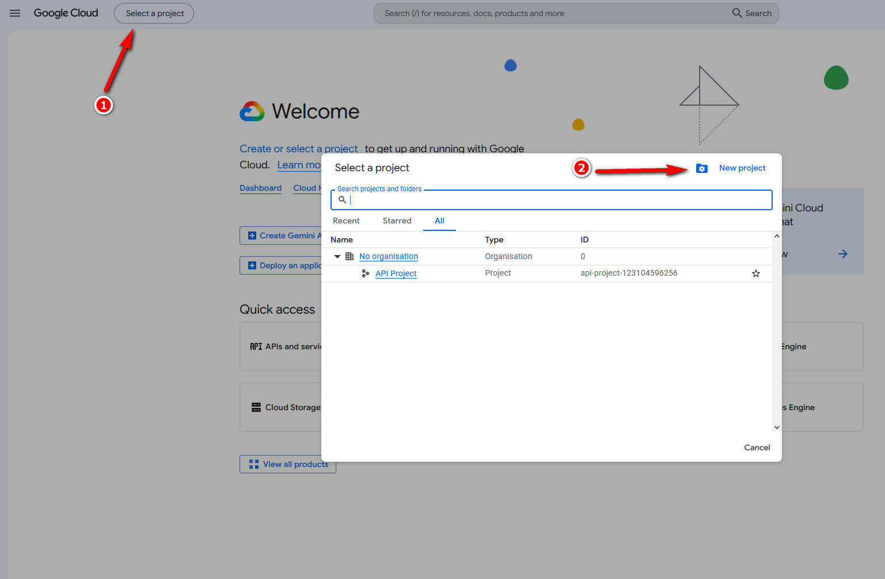
- Give your project a name (e.g., Zen Cart Login) and create it. Once it's created, ensure it is selected as the active project.
- Navigate to API & Services.
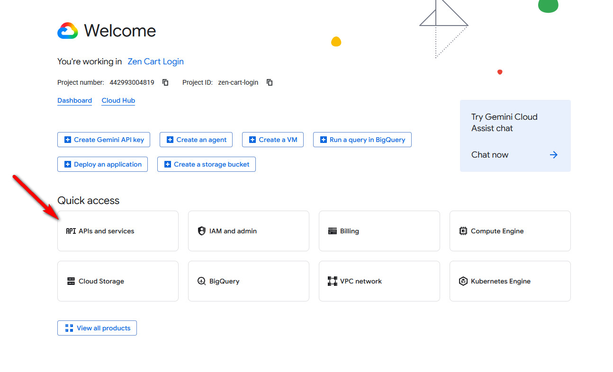
- Click OAuth consent screen in the side menu and select Get Started.
- Give your app a name (you can use Zen Cart Login again), set audience to External, set your contact info, agree to the policy, click Continue, and finally Create.
- Go to Branding in the side menu. In App Domain, add links as requested. Add an authorized domain (the domain where you'll be using this app) and save changes.
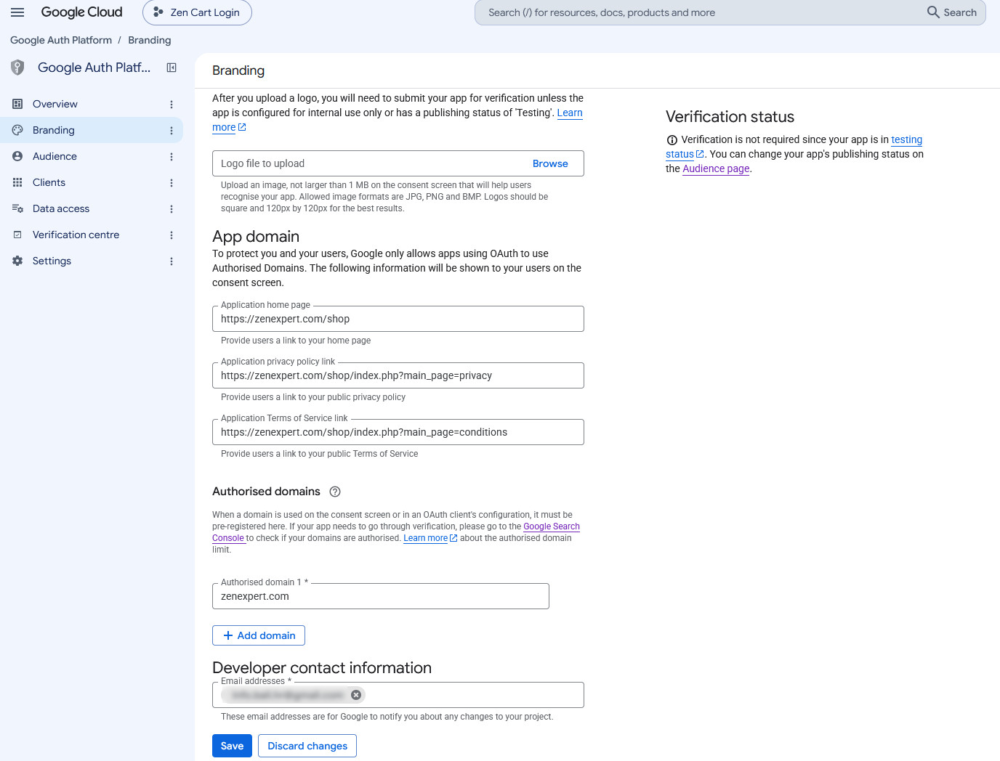
- Go to Data access in the side menu and click Add or remove scopes. Add the three non-sensitive default scopes required for identity verification:
.../auth/userinfo.email(Access the user's email address).../auth/userinfo.profile(Access basic profile information like name)openid(OpenID Connect scope for identity verification)
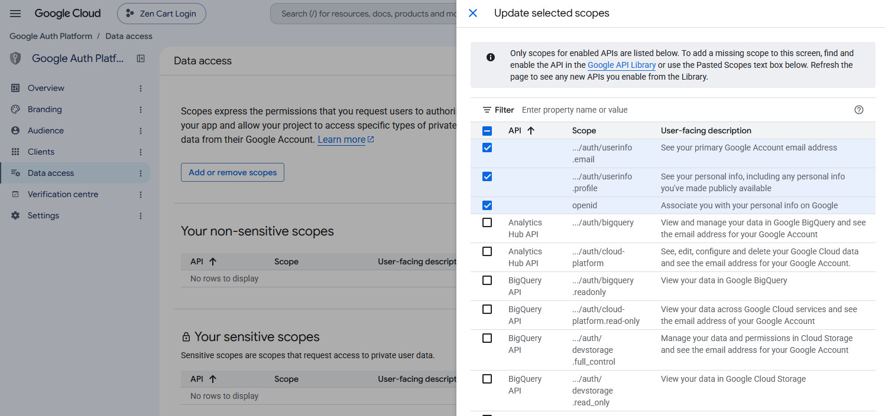
- Go to Audience in the side menu and click Publish App.
- Go to Clients in the side menu and click Create client.
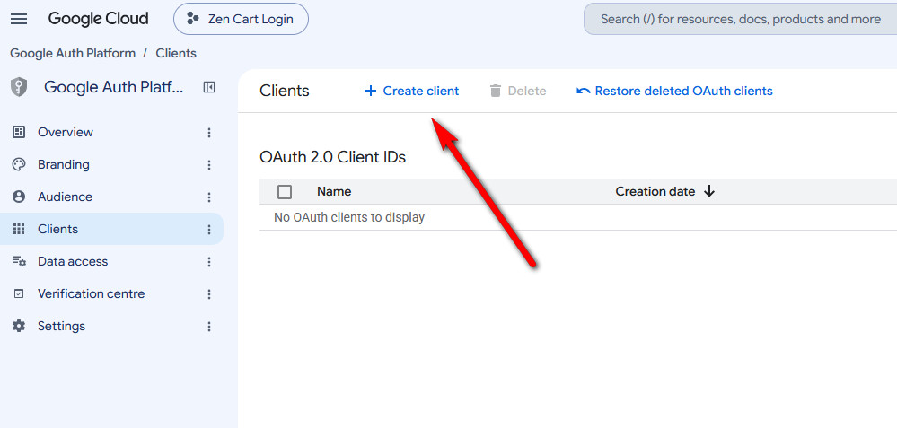
- Set Application type to Web application and give it a name (e.g., Zen Cart Login).
- Under Authorised redirect URIs, click Add URI and set it to:
https://YOUR_DOMAIN.com/PATH_TO_YOUR_SHOP/index.php?main_page=social_oauth_callback&provider=google
Click Create.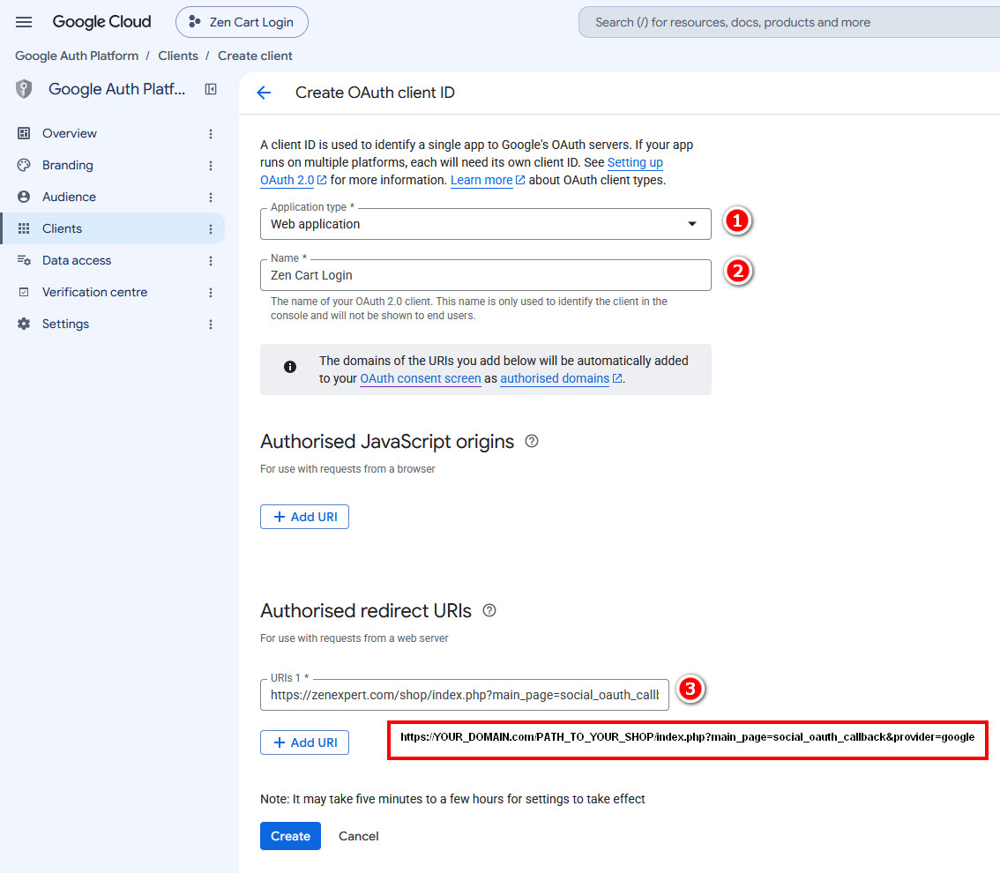
- Copy your Client ID and Client Secret into your Zen Cart admin Social Login configuration page.
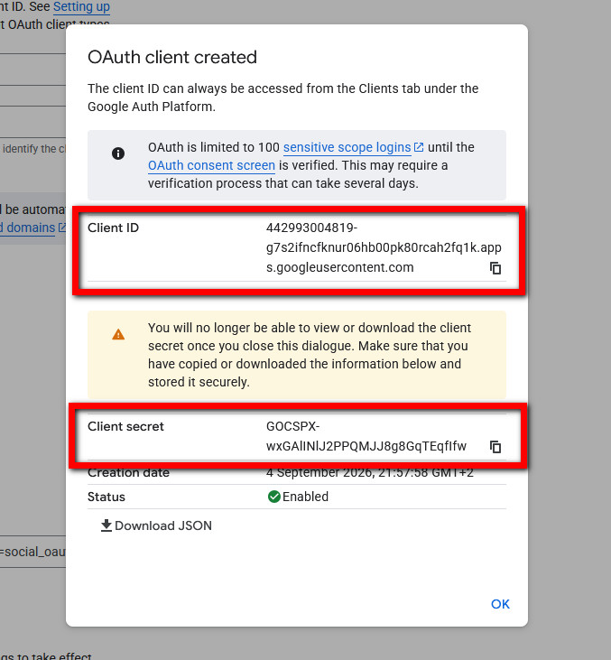
- Your site is now ready to use Google Login.
Facebook Configuration
Note: Before you proceed, please keep in mind Facebook Login is only available for Verified Businesses. If you have a business, you'll be required to verify it before you can use the feature.
- Go to Meta for Developers. If you don't have an account, you'll have to create one.
- Navigate to My Apps and click Create App.
- Name your app (keep in mind it's visible to users, so you might want to name it YOUR_SITE Social Login).
- Select Authenticate and request data from users with Facebook Login, select the business portfolio to use with this app, and complete the steps in the wizard.
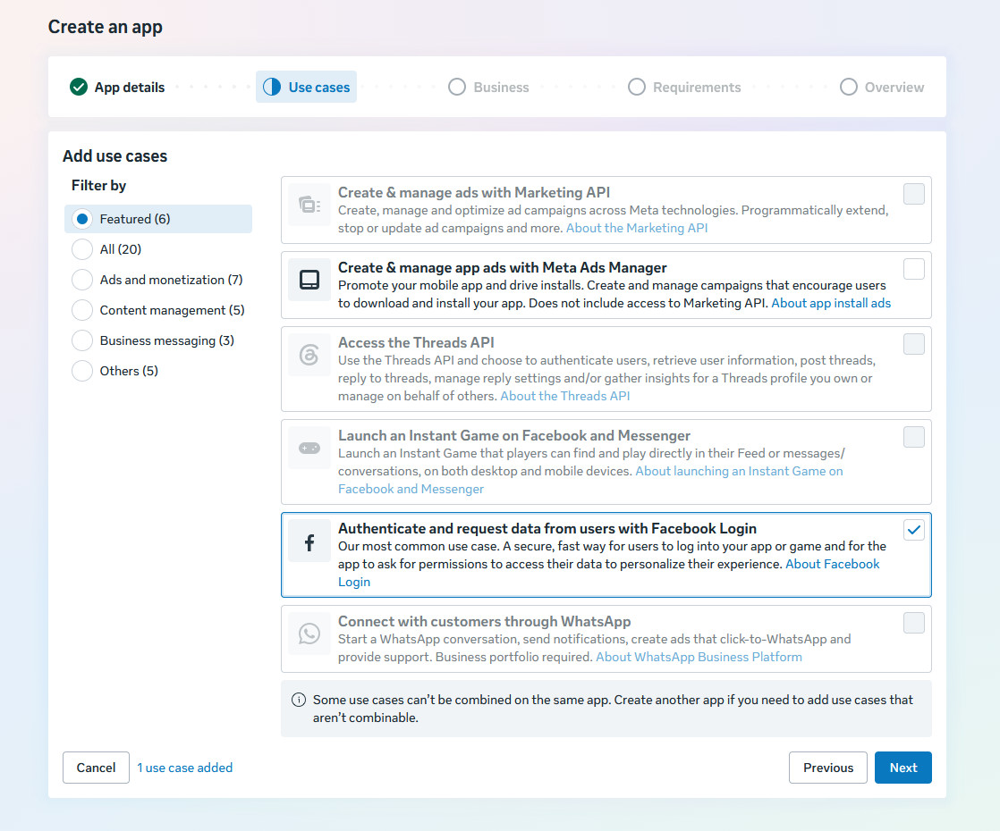
- In your Dashboard, go through each step that doesn't have a green checkmark.
- Under Customize the Authenticate and request data from users with Facebook Login use case, you will need to add email under permissions. You only want
emailandpublic_profile, nothing else.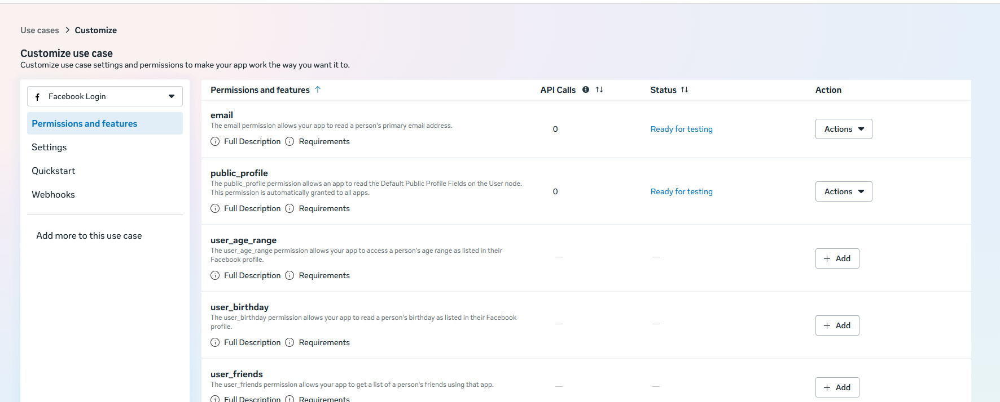
- Go to Settings and set Valid OAuth Redirect URIs to:
https://YOUR_DOMAIN.com/PATH_TO_YOUR_SHOP/index.php?main_page=social_oauth_callback&provider=facebook
Click Save.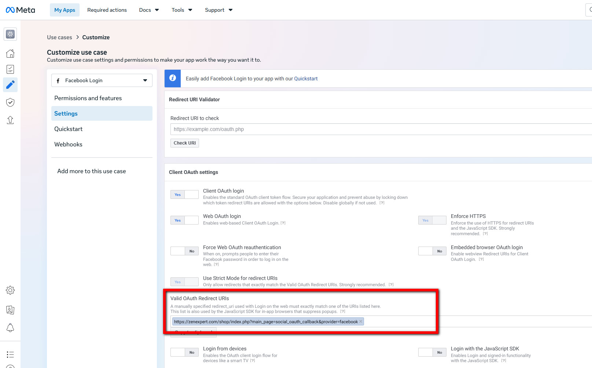
- Go to App Settings > Basic and fill out all details. A link to your site's Privacy Policy, Terms of Service, and Data Deletion pages is required. You will also need to upload a 1024x1024px (or larger) image that will be used as the App icon. Ensure you prepare an image with a transparent background.
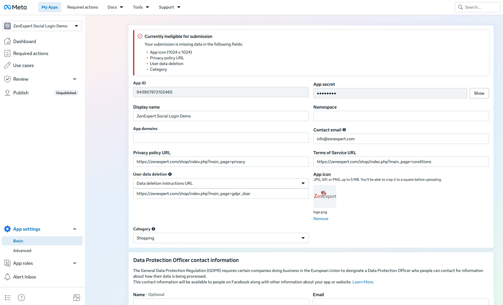
- Scroll down, click the Add platform button, and select Website.
- Provide the URL to your website and click Add or update instructions. Fill out all required information (for "Is Facebook Login integrated on this platform?", select No).
- Save your changes and publish the app.
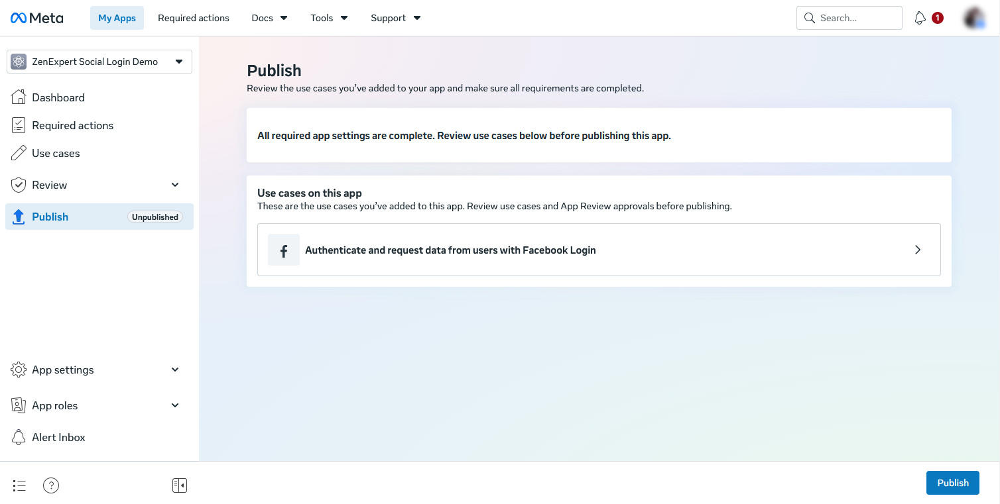
- If there are still any errors or warnings, fix them before publishing. Apps go through verification, so wait until your app is approved before enabling it on your website.
- Once approved, go to App settings > Basic, click the Show button to reveal your App secret, and copy your App ID and App Secret into your Zen Cart admin Social Login configuration page, then enable Facebook login.
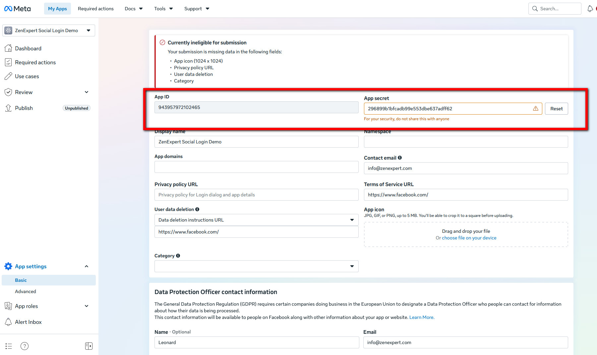
- Your site is now ready to use Facebook Login.
Apple Configuration
Configuring Apple requires cryptographic keys and strict domain verification. You must have an active, paid Apple Developer account to generate these credentials.
Step 1: Create an App ID
- Log into the Apple Developer Portal and navigate to Certificates, Identifiers & Profiles.
- Go to Identifiers, click the + icon, and select App IDs.
- Register a primary App ID (e.g.,
com.yourstore.app).
Step 2: Create and Configure a Service ID
- Return to Identifiers, click the + icon, and select Services IDs.
- Define an identifier (e.g.,
com.yourstore.app.login). This specific string serves as your Apple Service ID (Client ID) for the Zen Cart admin panel. - Click into the newly created Service ID, check the box for Sign In with Apple, and click Configure.
- Assign your primary App ID from Step 1 as the Primary App ID.
- Under Web Domain, enter your store's root domain (e.g.,
yourstore.com). - Under Return URLs, paste your exact OAuth callback URL (e.g.,
https://yourstore.com/index.php?main_page=social_oauth_callback&provider=apple). - Save the configuration.
Step 3: Generate the Auth Key
- Navigate to the Keys menu in the left sidebar and click the + icon.
- Name the key (e.g., "Store Social Login") and check the box for Sign In with Apple.
- Click Configure and link it to your primary App ID.
- Click Register and then Download to save the
.p8file to your computer. Note: Apple strictly limits this download to a single occurrence. - Copy the 10-character Key ID displayed on this confirmation page.
Step 4: Retrieve Your Team ID
- Locate your 10-character Team ID, which is permanently displayed in the top-right corner of the Apple Developer portal beneath your developer account name.
Step 5: Securely Host the .p8 File
- Upload the downloaded
.p8file to your web server via FTP/SFTP. - Security Requirement: Place this file outside of your
public_html(or web root) directory so it cannot be directly requested or downloaded via a web browser. - Note the absolute server path to this file (e.g.,
/home/username/apple_keys/AuthKey_XXXXXXXXXX.p8).
Step 6: Zen Cart Admin Configuration
- Log into your Zen Cart admin panel and navigate to the Social Login configuration menu.
- Set Enable Apple Login to
true. - Enter the Apple Service ID (from Step 2).
- Enter the Apple Team ID (from Step 4).
- Enter the Apple Key ID (from Step 3).
- Enter the Apple Key File Path (the absolute server path from Step 5).